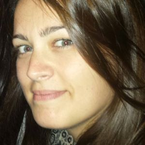

¿No me tomas en serio porque soy una mujer? Espera y verás.
EQUIPO
Somos el equipo Code Fighters, ante todo mujeres luchadoras. Valentía y tenacidad son nuestros rasgos más
distintivos. Un grupo multidisciplinar con un hambre voraz por aprender y progresar rápidamente.
Nuestras diferencias nos hacen más fuertes, y juntas descubriremos todos los secretos que oculta el código. De
momento no sabemos kung-fu, pero estamos en ello.
Fortalezas
Somos versátiles, con capacidad para hacer frente a los problemas que puedan surgir, aun siendo estos
cambiantes e inesperados. Creemos firmemente que el trato humano es el pilar sobre el cual se fundamenta el
éxito: para comprender tus preocupaciones y necesidades, nos apoyamos en un gran ambiente de trabajo.
Debilidades
Aunque contamos con poca experiencia, no nos faltan ganas, y estamos convencidas de que no habrá mejor
aprendizaje que recorrer este camino junto a vosotros.
QUIÉNES SOMOS

Noelia Prieto
¡Hoooolaaaa! Soy Noe, una chica del norte, palentina exactamente, amante del calor, viajar y la buena
compañía, ¡entre otras muchas cosas! Vengo de un mundo que no tiene nada que ver con la programación:
trabajaba en banca. Si, era bancaria, que no banquera (¡ojalá!) y pese a que me gustaba mi trabajo, tras mucho
darle vueltas, decidí cambiar el rumbo de mi vida. Y el resto, ¡pues ya lo sabéis! :)
Natalia Jiménez
¡Hola! Soy Natalia y vivo en Madrid. Mi pasión por los animales desde pequeña me llevó a estudiar auxiliar de
veterinaria, así que si tenéis dudas con vuestras mascotas podéis hacer un 2x1. Practico karate, mi otra gran
pasión desde que tengo uso de razón.
Durante el vegit rano trabajo de socorrista, ya sabéis, ¿qué mejor plan para el calor del verano? Y, desde
ahora,
espero añadir que contáis con mis servicios ;)
Alejandra Mejía
Desde que era una niña me planteé en múltiples ocasiones que era lo que quería ser en un futuro. Me preocupaba
tanto, tanto, ¡TANTO! que no tuve más remedio que hacerme historiadora... Tras diferentes proyectos, cursos,
desarrollo autodidacta (y para que engañarnos, algún que otro traspiés), me encontraba más preparada que nunca
para resolver la cuestión "¿qué quiero ser?" Gracias a mi tenacidad y a la oportunidad brindada por
Adalab ¡estoy más que lista para mi futuro como front-ender!
Paula Perera
¡Hola! Soy Paula una madrileña amante del diseño, la carpintería y cualquier cosa que implique trastear. He
pasado por varios perfiles dentro del mundo e-commerce (retoque de imágenes, creación de contenido, gestión
de equipos...) y solo me faltaba la programación. Después de hacer dos webs con Wordpress tenía la espinita
de
aprender a hacer una web desde cero. Me puede la curiosidad, si no se hacer algo no puedo evitar investigar,
y en ello estoy.